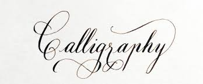

Kas tai?
Kaligrafija (gr. kallos – grožis + grapho – rašau) – dailyraštis, gražaus ir raiškaus rašymo menas. Puošia tekstą, daro jį emocingesnį, vaizdingesnį. Svarbiausias kaligrafijos elementas – ranka rašytas arba pieštas šriftas. Kaligrafinis raštas puošiamas ornamentais, inicialais, spalvinamas. Populiarus rankraštinėse knygose, taikomosios grafikos kūriniuose, laiškuose, senųjų Rytų šalių, islamo mene (kufiškasis raštas); ypač buvo paplitęs viduramžiais. Kaligrafijos raida susijusi su šrifto istorija bei stilistine dailės evoliucija.
Ar žinojote, kad svarbūs sveikinimai, dedikacijos, kuriuos siunčia šalių vadovai vieni kitiems, vis dar užrašomi ranka. Nors jie dažniausiai būna užrašyti įgudusių kaligrafijos meistrų rankomis, tai laikoma aukštos pagarbos ženklu. Save gerbiančios verslo įmonės svarbius ir gerbiamus partnerius ar klientus taip pat sveikina tik ranka rašytais tekstais.
Viena iš svarbesnių motyvacijų dažniau rašyti ranka, bei mokytis kaligrafijos, yra tai, kad rašydami ranka mes laviname savo smegenų veiklą, ko negalima pasakyti apie bendravimą su kompiuteriu. Kita vertus, rašymas ranka padeda mums išlaikyti savo individualumą, t.y. būti kiek kitokiais nei aplinkiniai. Juk kiekvieno mūsų raštas yra labai individualus ir išskirtinis. Neseniai atlikti tyrimai įrodė, kad rašant, rankų motorika leidžia mums laisvai išreikšti save, per daug negalvojant kaip parašyti vieną ar kitą žodį taisyklingai. Rašymas ranka padeda sklandžiau sudėlioti raidžių seką, išvengiant skiemenų rašymo atbulai, kas dažnai nutinka renkant tekstą klaviatūra, kai žodyje sukeičiamas raidžių eiliškumas. Indianos universiteto psichologai tyrinėdami vaikų smegenų veiklą nustatė, kad vaikams ranka rašant raides, net trijose smegenų vietose buvo užfiksuotas padidintas veiklos aktyvumas. Joks aktyvumas nebuvo užfiksuotas tas pačias raides rašant, t.y. renkant kompiuterio klaviatūra. Taigi, rašydami ranka, mes lavinam savo smegenis.
Kaligrafija arba rašymas ranka šiandien laikoma viena moderniausių ir efektyviausių elgsenos koregavimo priemonių. Tai vadinama grafoterapija. Ji veiksminga dėl dviejų priežasčių. Visų pirma neuro muskuliarinis ryšys turi tiesioginę įtaką nerviniams veiksniams smegenyse, kurie įtakoja elgseną. Antra, visi pokyčiai asmeniui akivaizdžiai pastebimi, tad tai dar labiau sustiprina elgsenos pokyčius sąmonės ir pasąmonės lygmenyje. Daugiau apie grafoterapiją galite sužinoti čia.
TOP